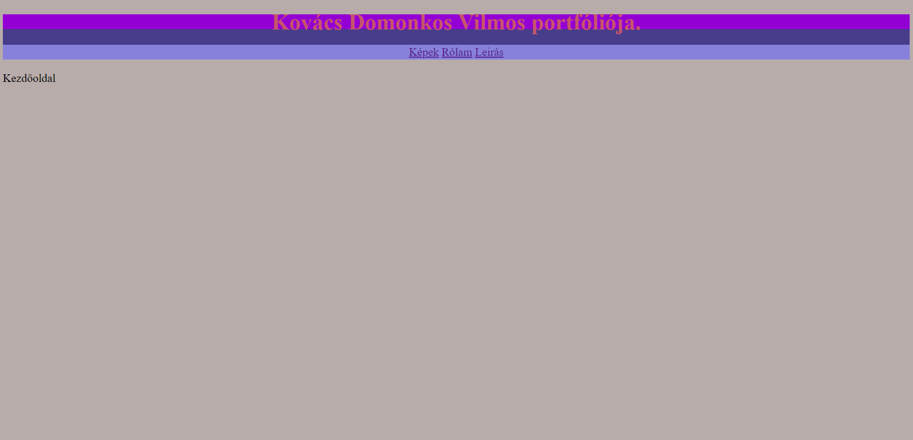

Kovács Domonkos Vilmos portfóliója
Az eredeti ötlet:

Az 1.0 verzió

Tervrajz

Felmerülő nehézségek: Számomra nem volt egyszerű ennek a weboldalnak az elkészitése,ugyanis korábbi tanulmányaim nem terjedtek ki a html,css platformok használatáig.Nagy pozitívum,hogy a témában nagyon sok tananyag található akár magyarul,akár angol nyelven.Összeségében: megfelelő időráfordítással a tervezett portfóliónk elkészithető.
Változások:Elősször próbáltam a Veres Kristóf portfóliójához haszonlót csinálni,de a nagy részét improvizáltam.
Felhasznált források: